Dongfang
Welcome! Dōngfāng is a craftsman with a cross-knowledge background located in Beijing. As a UX designer or UI developer who is passionate about Web design and writing, he holds a master degree of arts from the Education University of Hong Kong, and used to work for Tencent and DiDi Chuxing group for years.
Overview
-
Dōngfāng can provide you with the following helps:
1) Design consultation of making a responsive website;
2) Interaction design for mobile application;
3) Technical translation, from English to Chinese;
4) Copy localization, both of Mandarin and Cantonese;
5) Giving lessons on how to read a children's picture book.The picture below depicts Dōngfāng's knowledge structure about design, past experience is listed in it by relevance.

Micro-fiction
-
A.I.
THE 45th YOUTH LITERARY AWARD OF MERIT IN 2019
In the first year, my dear, you said: "Draw a peacock with blue feathers for me." I said ok, then I did it.
In the second year, you said: "Draw a peacock." I said ok, I did it, with blue feathers.
In the third year, you said you want to draw a bird. I said ok, then drew a peacock with blue feathers. You said: "You do know what I want is to draw peacocks, really sweet."
In the fourth year, you said you want a picture. I satisfied you. You said: "How do you know I want a BIRD?"
In the fifth year, you said "Let There Be Bird" in a bad mood. I painted for you. Then you said: "I'm really happy."
In the sixth year, I painted for you, you said "Haha".
Last year, I did the same for you. You hurt me. I could not understand you, my dear.
Translation
-

渐进增强：跨平台用户体验设计
POST & TELECOM PRESS (2017).
TRANSLATED FROM: GUSTAFSON, A. (2016). ADAPTIVE WEB DESIGN (SECOND EDITION).SAMPLE PARAGRAPH:
He found that OS-wise, Windows use had dropped from 93.5 percent to 72.4 percent, no doubt because of the rise of Apple’s OS X and iOS as well as Google’s Android operating system. As you’d likely expect, he found that mobile usage (including tablets) had grown year over year at a rate of 200 to 400 percent from a paltry 0.1 percent in 2008 to 6.2 percent in 2012. Couple the decline of Windows with the rise of mobile and the launch of Chrome (which came out in 2008) and it’s no wonder Jason also saw a sharp decline in Internet Explorer’s numbers: Internet Explorer dropped from a dominant position, bringing 75.5 percent of their visits, to a mere 37 percent. (p. 93; ch. 4).
从美国居民使用的操作系统来看，Windows操作系统的占有率从93.5%跌落到了72.4%，毋庸置疑，这些份额主要是被Apple公司的OSX和iOS操作系统，以及Google的Android操作系统蚕食掉的。不出意料，他在文章中表示，移动设备（包括平板电脑）的使用率，逐年保持着200%到400%的高速增长，2008年移动设备的使用率还不足0.1%，而在2012年，这个数字已经上涨为6.2%。考虑到Windows 的式微，移动设备的崛起，以及2008年诞生的Chrome浏览器的迅速普及，Jason毫无意外地看到了 IE浏览器那摧枯拉朽般的份额下跌，从占市场支配地位的75.5%，腰斩至是年的37%。(第79页; 第4章).
-

JavaScript数据可视化编程
POST & TELECOM PRESS (2017).
TRANSLATED FROM: THOMAS, S. A. (2015). DATA VISUALIZATION WITH JAVASCRIPT.SAMPLE PARAGRAPH:
We haven’t specified the ranges of the x- and y-scales, but assume for now that each ranges from 0 to 100. The starting x-value of 12.5, therefore, is 12.5 percent of the full range. When we convert that value to polar coordinates, the result will be 12.5 percent of the full 360°. That’s 45°, or π/4. The x-value extends another 25 percent, so the final x-value adds another 90°, or π/2, to the starting value. For the y-values, our scales take the square root and map the results to the domain from 0 to 250 (
maxRadius). The initial value of 10, therefore, is divided by 100 (for the range) and transformed to `sqrt 0.1` × 250, or 79. The final value of 10+30 results in a radius of `sqrt 0.4` × 250, or 158. That’s the process that creates an SVG for each data value. (p. 256; ch. 7).我们尚未定义x和y轴的取值范围，现在我们假设它们的范围都是从0至100。x值初始为12.5，对于取值范围为100的x轴来说，这个x值的起始点其实也就是整个x轴范围的12.5%。当我们把这一个值转换成极坐标的时候，结果将会转换为360°的12.5%，也就是45°，或者π/4。随后，x值在直角坐标系内递增了25%，换成极坐标的显示方法，x值即又递增了90°，或者π/2。另一方面，对于y值来说，直角坐标系内的值将会以开平方根的方法转换为极坐标，并在0到250的范围内(
maxRadius)取值。因为y值的初始值等于10，即 10 / 100 × 100% = 10% (0.1) ，因此，y值的极坐标会转换为 `sqrt 0.1` × 250 ≈ 79。而对于y轴上递增的30，我们要和之前初始的10合并计算，即将 (10 + 30) / 100 × 100% = 40% (0.4) 的值转换为极坐标，计算方法是 `sqrt 0.4` × 250 ≈ 158。这就是为每个数据值建立SVG的全部处理过程。 (第268页; 第7章).
Keynotes
-
From Voice & Tone to Content Strategy
2016, DiDi Chuxing
I introduced two types of content guideline to DiDi Hitch's design team members: Uber's "Copy Style" and MailChimp's "Voice & Tone". At the same time, the essential principles of Content Strategy were also mentioned in this presentation.
-
The Overview of Web Design
2016, DiDi Chuxing
Considering most designers in DiDi's design team were more familiar with the mobile platform than desktop, This presentation focus on mobile: how to present a graceful web page on mobile devices? how to take the advantage of adaptivity for web pages? what is the design trend in recent years? In the end, I reviewed some concepts that frequently be discussed by UI developers.
-
Future Friendly Web Design
2015, TENCENT INC.
This keynote is for junior designers of Tencent online media group. Here I introduced some fantastic shares by great designers around the world, sorted the core concepts and principles of Future Friendly Web Design, listed some designers, books, and resources about FFLY.
-
Responsive Web Design: Rebuild as Design
2013, TENCENT INC.
Responsive Web Design combines design style and tech solution together. In this live speak which was for 200 audiences of 3 cities, I addressed the best practices of responsive web design: how to deal with the increasing development of mobile devices and resolutions? With the rules, methods and new design workflow evolution, performance would be considered as a significant part of our design process.
Design System
-
DiDi Hitch
2016, DiDi Chuxing
Firstly, this design system serves Web products of DiDi Hitch, including the built-in webserver and the operational activity web pages. Secondly, this design system serves UX designer and front-end developer. It is both a front-end guideline and a UI component library.
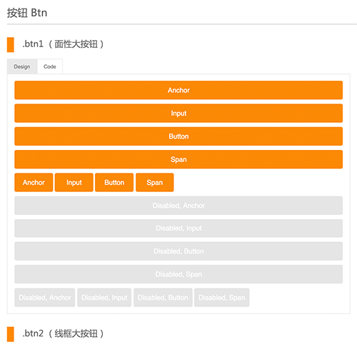 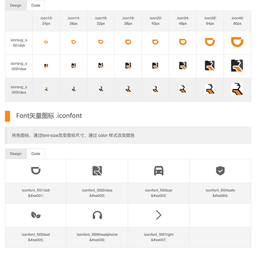 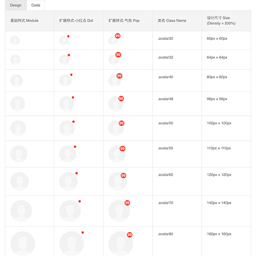 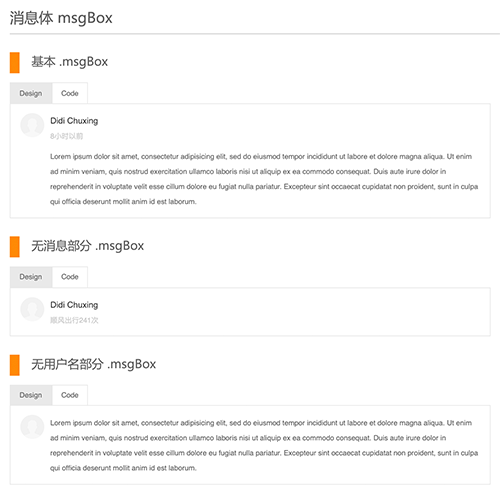 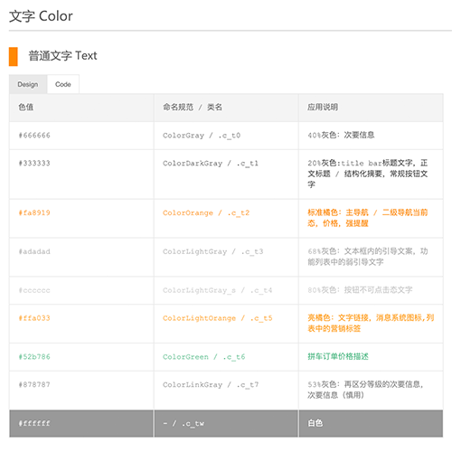 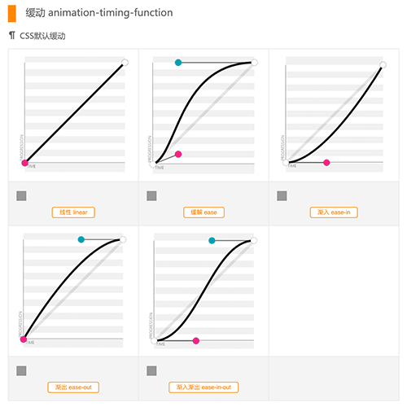
Interaction
-
DiDi Hitch
2015 - 2016, DiDi Chuxing
The Survey Page After A Hitch Journey: After the trip, we will collect passengers' evaluation data on his or her driver to help us continuously improve the quality of our services. The survey page is divided into a real-name part and an anonymous part. The driver client will see a positive evaluation written by the passenger, and the negative evaluation written by the passenger will be submitted directly to the backend system anonymously as evidence, we will use that data to analyze whether a driver is good enough.
For fast-paced iterations, 70% of DiDi client's UI was implemented by webserver way, no exception this page was.


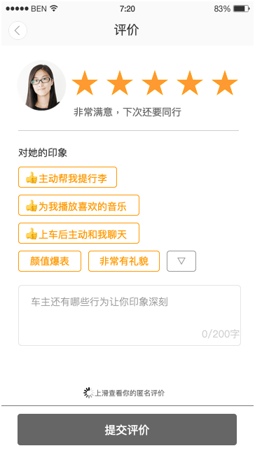 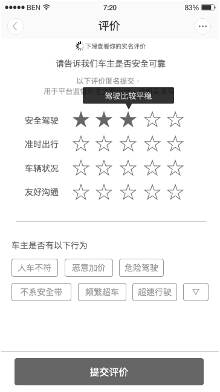 

-
Weishi APP
2014 - 2015, TENCENT INC.
Interaction of Forwarding A Video: Weishi was a Vine-like short video sharing App. In this project, considering the difference between iOS and Android platform, we applied different design strategies for them. For example, on the iOS platform, we combined "share" and "forward" operations into the iOS-only actionsheet to reduce the number of buttons visible on the video page.
iOS Android 

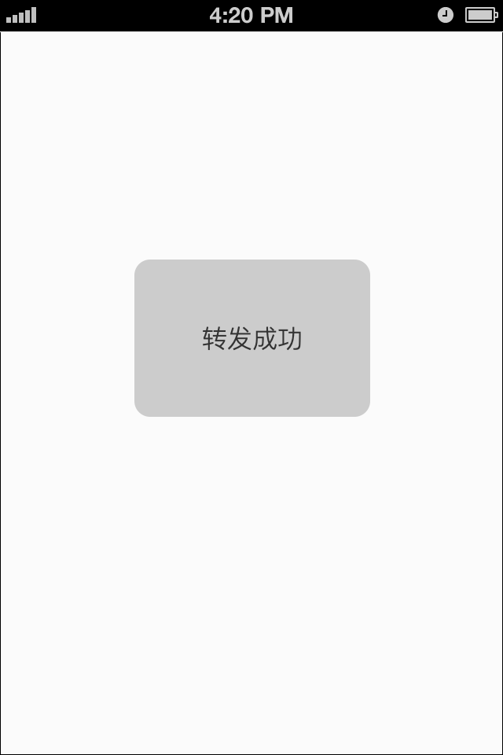 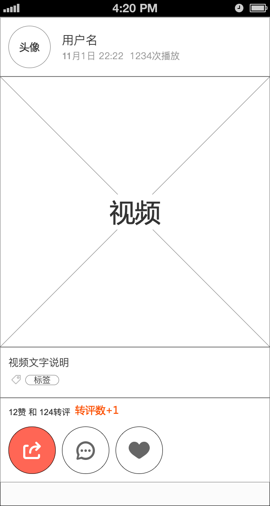 

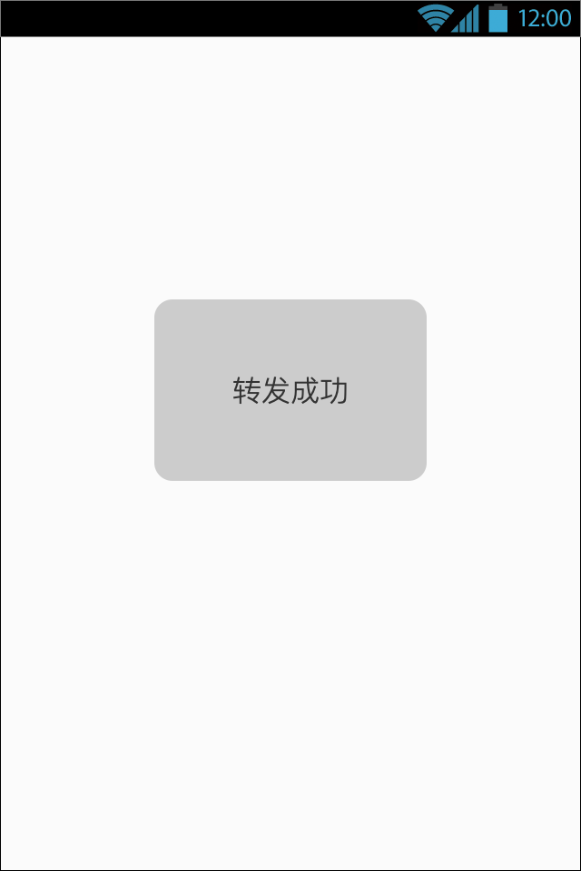 

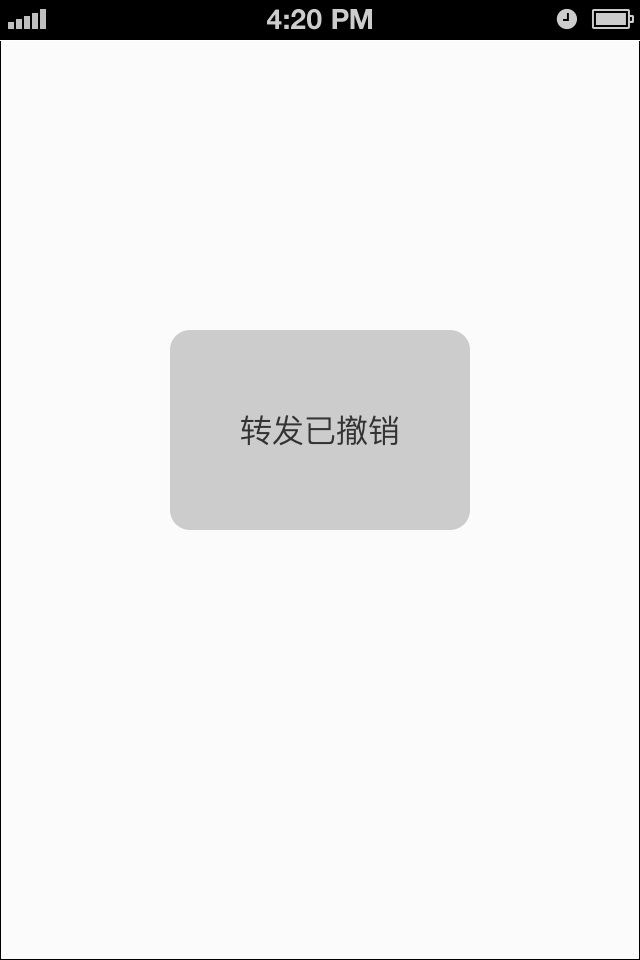
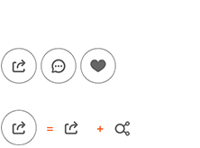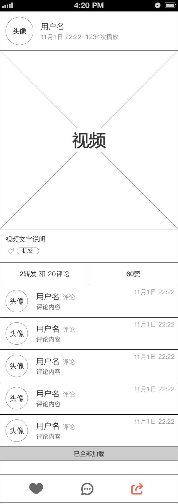 

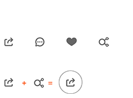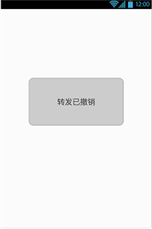
Animation
-
DiDi Hitch
2015 - 2016, DiDi Chuxing
Operational Pages of DiDi Hitch Mobile:
We believe in Sharing because it is of rock and sexy. Therefore, we should keep harmony between background music and the animation rhythm if a web page contains those elements. The value of animation-duration in the source code should be strictly tuned to be equal to an integer multiple of one beat.Tap or drag the content on the PHONE area to preview more if you are using a desktop browser.
Transport During The Spring Festival
December 2016
Trip Data on The 1st Anniversary Show
June 2016
Make Websites
-
The International Official Website of Peking University
2015, Peking University
The International Official Portal Website of Peking University has made its debut on November 20th 2015. This new responsive site is designed with "Future-Friendly Design" thinking, applied bootstrap grid system, and support IE7+ browser.


Build Tools
-
UFO Animate
2016, PERSONAL PROJECT
UFO Animate is a CSS animation system that can quickly build CSS animation effects visually. Depends on your system language settings, English and Simplify Chinese are supported.